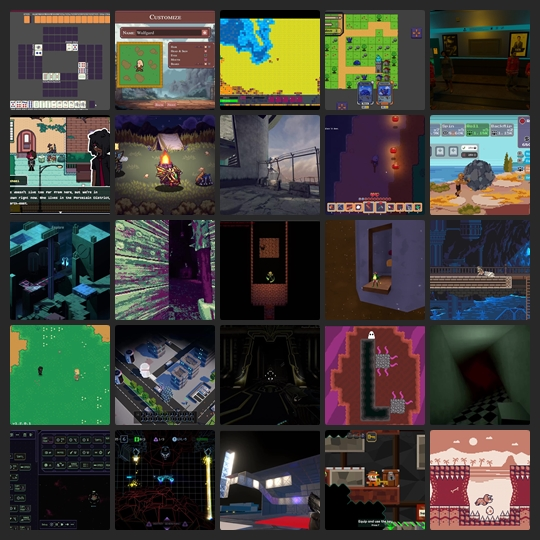

BlueSky Quick Recap #indiedev 2025-09-18
Show Only Saved Posts
Saved Post Num:
---
<< Previous
Home
Next >>

Time Range:
18 Sep 2025
Total Number of Post: 583+
Number of Post Displayed: 37
Post Selection Guidelines
<< Previous
Home
Next >>